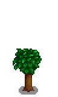

Naranjo
| Naranjo | |
 | |
| Información | |
| Brote: | |
| Producto: | |
| Tiempo de crecimiento: | 28 días |
| Estación de cosecha: | |
El Naranjo es un tipo de árbol frutal en Stardew Valley. Tarda 28 días en madurar, después de los cuales producirá una Naranja cada día durante el Verano. Debe ser plantado en el centro de un área despejada de 3x3 casillas y mantener esta área despejeda (piedras, arbustos, etc.), incluidos otros árboles, ya que si no, no crecerá. Una vez maduro, esto ya no es necesario
Cada año que pase, después de madurar completamente, los árboles frutales irán produciendo frutas de mayor calidad, hasta alcanzar la calidad  iridio después de 3 años. Si no se mantienen limpias las casillas alrededor del árbol, la fruta no aumentará de calidad. Varios jugadores han informado que los suelos y caminos fabricados, así como la hierba, no alteran la progresión de la fruta.
iridio después de 3 años. Si no se mantienen limpias las casillas alrededor del árbol, la fruta no aumentará de calidad. Varios jugadores han informado que los suelos y caminos fabricados, así como la hierba, no alteran la progresión de la fruta.
Si un rayo alcanza un árbol durante una tormenta, el árbol producirá Carbón durante unos días en vez de fruta
Los árboles frutales se pueden plantar en el Invernadero.
Fases de crecimiento
| Fase 1 | Fase 2 | Fase 3 | Fase 4 | Fase 5 - Primavera, Verano, Otoño, Invierno |
|---|---|---|---|---|
 |
 |
 |
 |
 |
| 7 días | 7 días | 7 días | 7 días | Total: 28 días |
Galería
| Árboles | |
|---|---|
| Árboles | Arce • Palmera • Pino • Roble • Árbol de caoba |
| Árboles frutales | Albaricoquero • Cerezo • Granado • Manzano • Melocotonero • Naranjo • Platanero • Árbol de mango |
| Semillas | Bellota • Piña • Semilla de arce • Semilla de caoba • Semilla de árbol místico • Semilla musgosa |
| Fruta | Albaricoque • Cereza • Granada • Manzana • Melocotón • Naranja • Mango • Plátano |
| Otros | Árbol místico • Árbol seta • Árboles de lluvia verde • Arbusto de té • Tocón grande • Tronco grande |